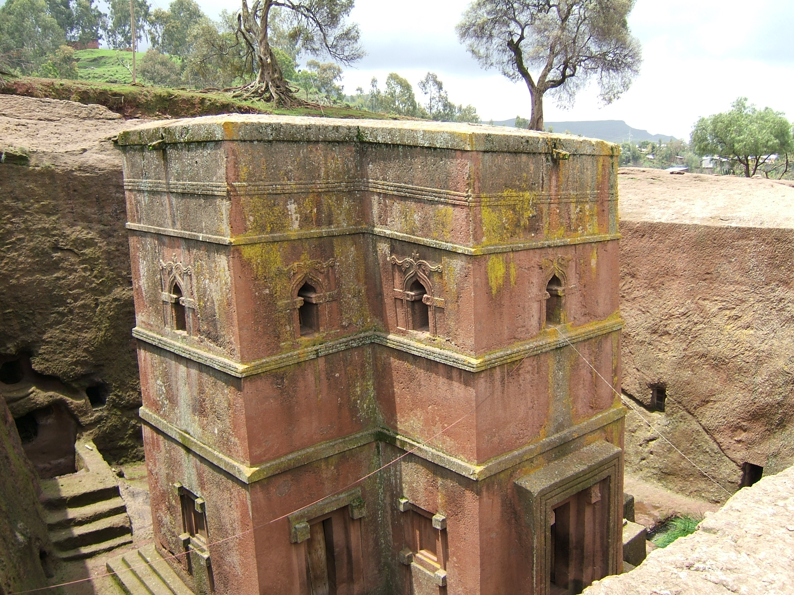

Iglesias excavadas en la roca de Lalibela
Las iglesias excavadas en la roca de Lalibela, declaradas Patrimonio de la Humanidad por la Unesco en 1978,son un conjunto de iglesias rupestres excavadas en la roca basáltica rojiza de las colinas de la ciudad monástica de Lalibela, en Etiopía. El conjunto monumental constituye el principal exponente de los escasos restos de la Dinastía Zagüe, de la que Lalibela era su capital. Las iglesias de Lalibela se distribuyen en dos grupos principales, separados por el canal de Yordanos, que representa el río Jordán, pero comunicadas entre sí por túneles, pasadizos y trincheras. El lugar fue concebido para que su topografía correspondiera a una representación simbólica de Tierra Santa.
